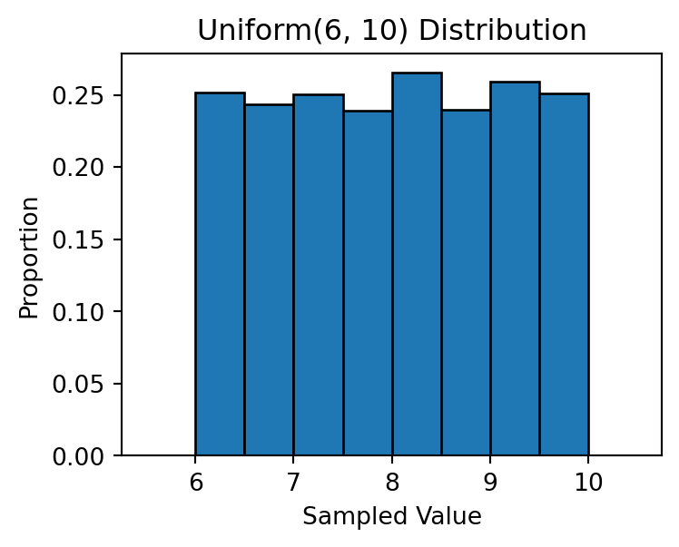
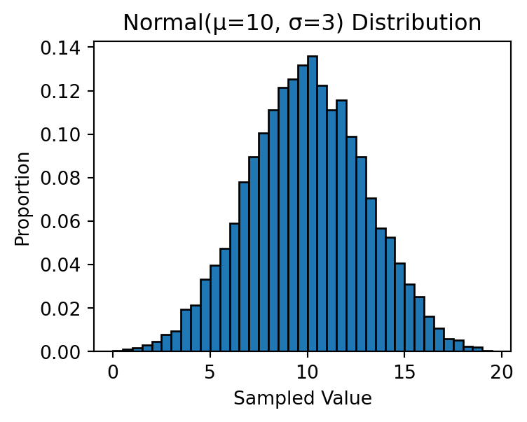
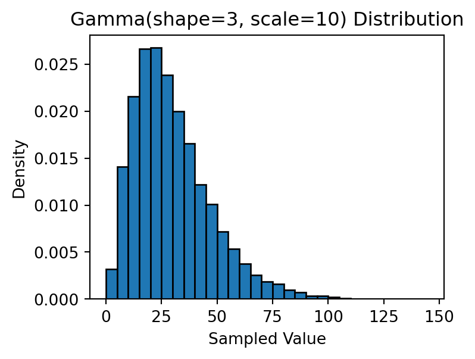

import numpy as np
import matplotlib.pyplot as plt10 NumPy Random Number
(CSE331) Python for Data Science
In this lesson, we will learn how to use NumPy to generate random numbers and random samples. While base Python provides basic randomization tools through the random module, NumPy extends these capabilities with greater flexibility, efficiency, and access to a wide range of statistical distributions.
1 Random Sampling
The numpy.random.choice() function allows us to randomly select elements from a given set. It is commonly used for simulation, bootstrapping, and random assignment in experiments.
Syntax
np.random.choice(a, size=None, replace=True, p=None)Parameters:
- a: An array, list, or range from which samples will be drawn.
- size: The number of elements to draw. If
None(default), only one value is returned. - replace: Whether sampling is done with replacement (
True, default) or without replacement (False). - p: An array of probabilities corresponding to each element in
a. If omitted, all elements are equally likely.
Example: Rolling a Die
# A single roll of a fair die
die_roll = np.random.choice(range(1, 7))
print(die_roll)4- We can also draw multiple samples:
eight_rolls = np.random.choice(range(1, 7), size=8)
print(eight_rolls)[3 6 2 6 6 4 3 4]- If we set
size=1, the function returns an array with a single value. If we leavesize=None, it returns just an integer:
one_roll = np.random.choice(range(1, 7), size=1)
print(one_roll)[5]Example: Loaded Die
- By default, all outcomes are equally likely. To assign different probabilities, we can use the
pparameter:
loaded_die = np.random.choice(range(1, 7), size=10,
p=[0.5, 0.2, 0.1, 0.1, 0.05, 0.05])
print(loaded_die)[2 5 1 1 1 4 1 1 1 4]Sampling from Non-Numeric Data
np.random.choice()can also sample from non-numeric arrays or lists:
my_sample = np.random.choice(['A', 'B', 'C'], size=10)
print(my_sample)['C' 'C' 'B' 'C' 'C' 'B' 'A' 'A' 'C' 'B']Sampling Without Replacement
- Setting
replace=Falseensures that each element is selected at most once:
names = ['Anna', 'Beth', 'Chad', 'Drew', 'Emma',
'Fred', 'Gary', 'Hana', 'Iris', 'Jake']
group = np.random.choice(names, size=5, replace=False)
print(group)['Gary' 'Emma' 'Anna' 'Jake' 'Drew']This is useful for creating random groups or assigning participants to treatment conditions.
2 Sampling from Statistical Distributions
NumPy provides many functions to generate random numbers from well-known probability distributions. Here we will focus on three important ones:
- Uniform distribution
- Normal distribution
- Gamma distribution
2.1 The Uniform Distribution
A random variable that follows a uniform distribution on an interval [a, b] has an equal probability of taking any value within that interval.
We can generate such random numbers using np.random.uniform():
unif_sample = np.random.uniform(low=6, high=10, size=10000)
print(unif_sample)[7.84428516 9.06520087 6.44672135 ... 8.24529126 9.05215809 9.33672511]Code
plt.hist(unif_sample, bins=np.arange(5.5, 11, 0.5),
density=True, edgecolor='black')
plt.xlabel('Sampled Value')
plt.ylabel('Proportion')
plt.title('Uniform(6, 10) Distribution')
plt.show()
2.2 The Normal Distribution
A normal (Gaussian) distribution is characterized by two parameters:
- Mean (μ): Determines the center of the distribution.
- Standard deviation (σ): Controls the spread of the data.
We can sample from a normal distribution using np.random.normal():
norm_sample = np.random.normal(loc=10, scale=3, size=10000)
print(norm_sample)[10.96900689 11.72749562 8.25999426 ... 12.67349771 10.74891314
15.807668 ]Code
plt.hist(norm_sample, bins=np.arange(0, 20, 0.5),
density=True, edgecolor='black')
plt.xlabel('Sampled Value')
plt.ylabel('Proportion')
plt.title('Normal(μ=10, σ=3) Distribution')
plt.show()
Estimating Probabilities Using Simulation
We can use large random samples to estimate probabilities for a normal random variable:
X = np.random.normal(loc=10, scale=2, size=1000000)
print('Prob[X < 10] =', np.mean(X < 10))
print('Prob[X < 12] =', np.mean(X < 12))
print('Prob[8 < X < 12] =', np.mean((X > 8) & (X < 12)))
print('Prob[6 < X < 14] =', np.mean((X > 6) & (X < 14)))
print('Prob[4 < X < 16] =', np.mean((X > 4) & (X < 16)))Prob[X < 10] = 0.499965
Prob[X < 12] = 0.841149
Prob[8 < X < 12] = 0.682784
Prob[6 < X < 14] = 0.954586
Prob[4 < X < 16] = 0.9972682.3 The Gamma Distribution
A random variable that follows a Gamma distribution takes only positive values and is often right-skewed. It is commonly used to model waiting times — such as time until a machine fails or until the next earthquake occurs.
We can sample from a Gamma distribution using np.random.gamma():
np.random.seed(137) # Setting the seed for reproducibility
gamma_sample = np.random.gamma(shape=3, scale=10, size=10000)
print(gamma_sample)[48.73927222 48.12681794 20.54500295 ... 12.91214078 33.07870526
40.04233959]Code
plt.hist(gamma_sample, bins=np.arange(0, 150, 5),
density=True, edgecolor='black')
plt.xlabel('Sampled Value')
plt.ylabel('Density')
plt.title('Gamma(shape=3, scale=10) Distribution')
plt.show()
Other Distributions
NumPy random number generator methods
| Method | Description |
|---|---|
uniform |
Draw samples from a uniform distribution |
integers |
Draw random integers from a given low-to-high range |
standard_normal |
Draw samples from a standard normal distribution |
binomial |
Draw samples from a binomial distribution |
normal |
Draw samples from a normal (Gaussian) distribution |
beta |
Draw samples from a beta distribution |
chisquare |
Draw samples from a chi-square distribution |
gamma |
Draw samples from a gamma distribution |